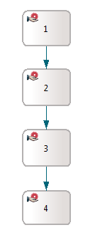

Figure: Complex flow example
Stardust provides the option to allow navigation between different interactive steps in a process workflow.
Relocation could be useful in the following cases:
In some cases a user selects a wrong option in an activity and as a result the workflow is in the wrong activity. To model correcting transitions for every activity in the model would not be realizable. With the option to jump back to the activity where the wrong option was selected, the workflow can be corrected in a well-arranged way.
A new version of the process is mandatory and the user must migrate existing process instances to the new version and continue from the equivalent position. In this case, he could jump back only to the appropriate activities instead of restarting the whole process.
A relocation is executed in two steps:
Relocation start points and end points are marked in the model. In the Activity property pages, two check boxes are available to determine:
Refer to section Modifying Activity Properties in chapter Specifying Activities of the Modeling Guide for details on these settings.
The workflow traversal is bidirectional, for example it can be traversed both forward or backward.
Note that Relocation can also be performed across subprocess boundary, either upwards or downwards.
Manual activities and application activity instances are supported as source activity types.
The following restrictions apply on activity instances to be used as source activities:
The default permission is given to the OWNER, but can be changed in the model.
All activity types are supported as target activity types.
The following transition options can be determined via API:
Note that jumping out of an asynchronously started subprocess is not supported.
For details refer to section Transition Options of chapter Relocating Activities in the Programming Guide.
After the transition is performed, the workflow must be able to continue in a normal way from the target activity. The workflow continues in the following way:
The following examples are use cases for finding targets in workflows with activities marked for source and target relocation.
This example has several activities in a sequence.

Figure: Linear flow example
If source activity is 2, the following applies:
This example complex flow is a combination of OR and AND joins.
Figure: Complex flow example
Activity 3 is not marked as relocation target, thus it will be skipped by the scanning algorithm.
Possible targets if relocating from 1:
The following forward targets are possible:
The following backwards targets are possible:
This example shows another complex type with AND joins.
The following transitions are valid in this flow:
This example uses subprocesses in a three level sharing.
Figure: Subprocess flow example
The workflow could be in the following order:
Another option is to start subprocess S2-2 from activity 4 of the main process.
If you want to relocate from activity 1 in the main process to the second activity (subprocess S2-2) of the second subprocess, there are several options:
The WorkflowService provides methods for finding targets and performing the transitions from the specified activity instance to the specified target. Refer to chapter Relocating Activities in the Programming Guide for details.
The Stardust Portal provides the option to relocate activities to an activity, which is determined as possible relocation target. Please refer to chapter Relocating Activities in the End User Handbook for details.
All data values get migrated if identical data exist in the new process definition version. Data with the same ID are copied in the following way:
The process history is migrated as follows:
Note that active activity instances are aborted and only one activity can be defined to be the starting activity for the new process instance.